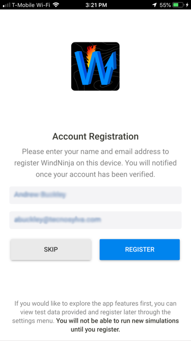
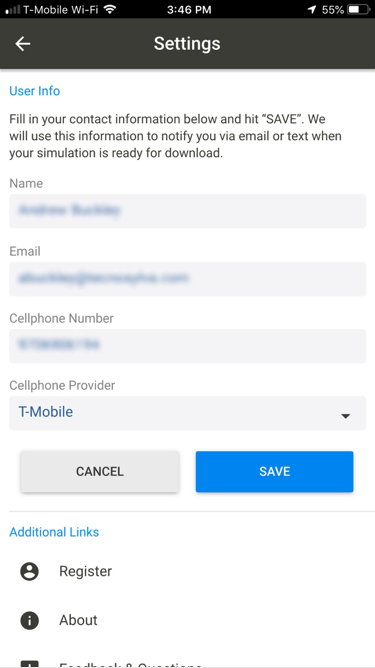
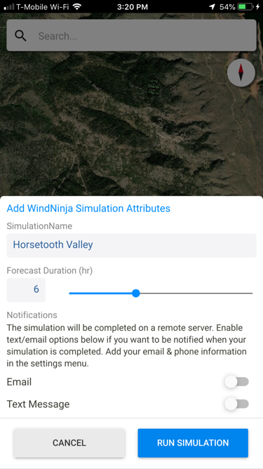
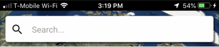
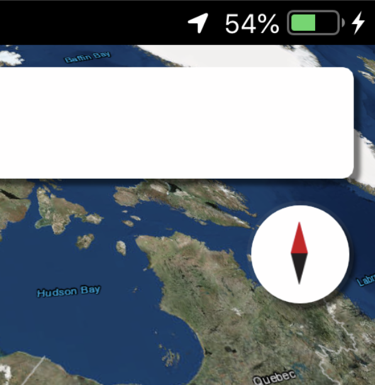
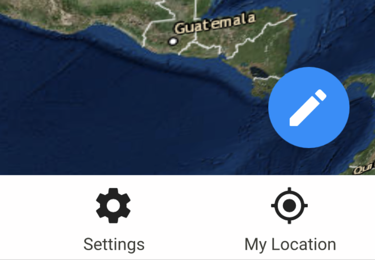
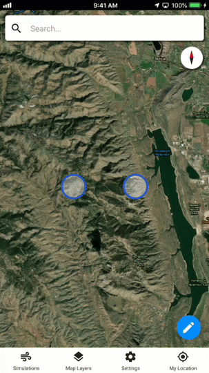
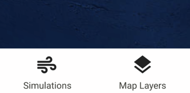
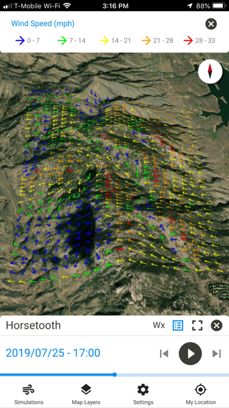

WindNinja Mobile Documentation
Welcome to the WindNinja Mobile User Manual!
Thanks for downloading WindNinja Mobile! Whether you’re a novice or advanced user, this documentation should cover almost everything you need to know about the app.
Getting started with WindNinja Mobile is easy and it won’t take long to learn the basics, but if you need any help or just want to find out more about a particular feature, then these guides are for you!
On this site you’ll find a collection of our latest documentation, covering the most recently added features in WindNinja Mobile, as well as, links to other resources, which you might find helpful if you’re just getting started.
If you have further questions or need additional support please contact us.
Jump to Section
Getting Started
To get started with WindNinja Mobile, please refer to this guide/tour for downloading, registering and using the application.
Downloading WindNinja Mobile
If you haven’t done so already, you can download WindNinja Mobile through either the Apple App Store for iOS devices or the Google Play Store for Android devices.
Registration
WindNinja Mobile is free to download and use, but it requires you to register an account before you can start creating and submitting new simulations. Registration requires you to enter your name and email address. Registration can be completed inside the mobile application.
You will be prompted to register the first time you open the application. However, if you chose to skip registration initially, you can access the registration screen through the Settings menu. Once you have submitted your registration, you will receive an email to confirm your account. Once you have completed this, you will be able to create new simulations.
Account Registration screen.
Contacting Support
Need further help getting started with WindNinja Mobile or want to learn more? Please visit the WindNinja website or contact us directly.
We hope you enjoy using WindNinja Mobile!
Other Links
Notifications
WindNinja has been set up to allow you to receive either/both SMS and Email notifications once your simulation is processed and ready for viewing.
Setting Up Notifications
Located in the settings menu, there is a “User Info” section where you can enter the email and phone number that you would like notifications sent to. To receive SMS notifications, it is also required that you select your service provider. Once you have entered this information, tap save to confirm.
Settings screen and User Info section.
Turning on Notifications
When you create a new simulation, you will have the option to turn on notifications for that simulation. At the bottom of the simulation attributes panel, there is a section where you can toggle on/off notifications for email and SMS. They are turned off by default.
Simulation attributes panel that contains the notification controls for that simulation.
Please Note: Turning on notifications is controlled on a per simulation basis.
Map Controls
WindNinja Mobile allows you to generate and view high definition wind model predictions in a 3D mapping environment. The mapping environment follows traditional map controls to allow you too quickly and easily become familiar with navigating around the map and adjusting your perspective.
User Interface Controls
WindNinja utilizes industry standard controls to help you navigate the map quickly.
Search Bar
The search bar is located at the top of the screen. It can be used to search for a specific location to help you narrow down your area of interest quicker. When you are creating or viewing a simulation the search bar is no longer available. While creating a simulation, the search bar switches to show you the size of the simulation domain. While viewing a simulation, the search bar is hidden to give you more screen real estate to view the simulation.
Search bar that is located at the top of the map.
Compass
WindNinja includes a compass graphic, which appears in the top right corner of the map. When tapped, the compass animates the map back to a position with a bearing and tilt of zero (the default orientation). This returns the map to an over-the-top view, similar to that of traditional 2D mapping environments.
Compass icon that appears in the top right corner of the map.
My Location Button
The My Location Button is located in the bottom tab bar on the right-hand side. When tapped, this will zoom the map to your current location using your devices GPS.
My Location icon that appears in the bottom tool bar.
Map Gestures
Similar to the UI Controls, WindNinja utilizes standard map gestures to make navigating and controlling the map easier.
Zoom Gestures
The map responds to a variety of gestures that can change the zoom level of the camera:
- Double tap to increase the zoom level by 1 (zoom in). This will zoom in to the location you tapped.
- Two fingers tap to decrease the zoom level by 1 (zoom out).
- Two finger pinch/stretch

Pinch/stretch to zoom in and out example. (Animated GIF)
Scroll (pan) Gestures
You can scroll (pan) around the map by dragging the map with one finger.
Tilt Gestures
You can tilt the map (3D View) by placing two fingers on the screen and moving them down or up together to increase or decrease the tilt angle respectively.
Tilt gesture example. (Animated GIF)
Rotate Gestures
You can rotate the map by placing two fingers on the screen and applying a rotate/twisting motion.
Map Layers
WindNinja provides a variety of base maps, as well as, reference layers that you can activate on the map. You can also add your own locally stored base maps, in the form of TPK’s, for offline and disconnected use in the field.
To access the base maps and reference layers, tap the map layers icon located in the bottom tool bar.
Map layers icon found in the bottom tool bar.
Base Maps
By default, WindNinja has included some standard base maps, such as Imagery, Terrain and World Topographic. You can also add your own base map layers in the form of a TPK file for offline and disconnected use or if you have base maps that include additional information (such as labels or fire perimeters).
Selecting a Base Map
- Open the Map Layers panel by tapping the layers icon located in the bottom tool bar.
- Select the base map by tapping on the preview image in the base maps section of the Map Layers panel.
Layers panel that contains the available Base Maps.
Your currently selected/active base map will be highlighted in blue.
The base maps section is scrollable to accommodate multiple base maps and added TPK files.
Adding a Base Map (TPK) on Android Devices
- Save or transfer the TPK file to your device’s internal storage.
- Open the Map Layers panel.
- Tap the “Add Folder” icon located in the top right of the Map Layers panel.
- Use the file browser to navigate to the location of the locally stored base map (TPK) file you would like to add.
- Select the file.
- Once selected, the base map (TPK) file will automatically be added to WindNinja and will appear in the base maps section of the Map Layers panel.
Please Note: We suggest saving the TPK file to your device's Downloads folder, as this allows you to find the TPK file easier and quicker. It also allows for you to easily add and remove the TPK files on your device.
Adding a Base Map (TPK) on iOS Devices
- Download the base map (TPK) file to your desktop or laptop computer.
- Connect your iOS device to your laptop or desktop computer using the device’s USB cable.
- Open iTunes on your desktop or laptop computer.
- Click on the “Phone” icon located in the top toolbar of iTunes to view your device’s information.
- Select the “File Sharing” option in the left sidebar of iTunes.
- Select WindNinja Mobile from the applications list.
- Click the “Add…” button located at the bottom right of the WindNinja Mobile Documents panel.
- Browse to the location of the saved base map (TPK) file you want to add.
- Select the file.
- The selected file will now appear in the WindNinja Mobile Documents list in iTunes.
- Properly disconnect your device from your desktop or laptop computer.
- In the WindNinja Mobile application open the Map Layers panel.
- Tap the “Add Folder” icon located in the top right of the Map Layers panel.
- The file browser will automatically open to the WindNinja Mobile application folder where the added base map (TPK) file was added by iTunes.
- Select the file.
- Once selected, the base map (TPK) file will automatically be added to WindNinja and will appear in the base maps section of the Map Layers panel.
Please Note: It is possible to directly add the TPK file to your iOS device without connecting to iTunes, however, due to the file browsing limitations of iOS, we have found this to be less of an easy process and often results in it being harder to locate the saved TPK file correctly.
Removing an Added Base Map (TPK)
- Tap the “Delete” icon that appears in the top right of the preview image of the added base map (TPK).
Delete icon that appears on a TPK Base Map.
Reference Layers
WindNinja includes a variety of reference layers that allow you to view additional information in relation to the wind simulation on the map. There is also an offline map reference layer which will allow you to view the map while disconnected in the field.
Layers Panel that contains the available Reference Layers.
The reference layers included in WindNinja Mobile are:
- Offline Map
- GeoMac
- MODIS
- VIIRS
- Vegetation
Simulation Basics
WindNinja allows you to create and view high resolution wind model simulations for an area of interest up to 70 square miles. You also have the ability to share and import simulations so with other WindNinja users through a unique identifier that is generated for each simulation.
Creating a Simulation
- Navigate (pinch/zoom/pan/search) to an area of interest on the map.
- On the map screen, tap the blue circle with the pen icon located in the bottom right corner.
- A rectangle green rectangle will appear on the map with circular vertices one each corner. This rectangle identifies the area that will be simulated. The search bar will transform into a label that identifies the size of the current simulation area. You can simulate an area with a maximum size of 70 square miles.
- To adjust the location of the simulation area, tap and hold on the plus icon in the middle of the rectangle until it turns blue. Once the rectangle has turned blue, you can drag the rectangle around on the map to reposition the simulation area.
- To adjust the size of the simulation area, tap and hold on one of the circular vertices until the rectangle turns blue. Once the rectangle as turned blue, you can drag the corner of the rectangle to resize the simulation area.
- A green box indicates that the simulation area is below the maximum allowed size of 70 square miles, while a red rectangle indicates that the simulation area is too large to simulate.
- When you are satisfied with the selected area, tap the blue circle with the checkmark to confirm. If you want to cancel creating a simulation, tap the white circle with the X icon.
- Once you have confirmed the simulation size and area, a bottom panel will appear where you are required to give the simulation a name and set the simulation duration. You can also turn on SMS or email notifications for this specific simulation. If these are toggled on, you will receive either an SMS or email notification when your simulation has been processed and is ready for download. Please make sure you have entered your phone number and/or email in the settings menu, otherwise you will not be able to turn on these notifications. Tap on the “Run Simulation” button to submit your simulation to the server for processing.
- Once submitted, your simulation will appear in the simulation list. This is where you will be able to see the status of your simulation(s) and download them locally to your device.

Selecting and editing an area of interest for a new simulation (Animated GIF).
Simulation attributes panel.
Please Note: Before you can view a simulation, you will have to download it locally to your device. This ensures that any simulations are downloaded locally to your device for offline and disconnected use.
Downloading & Viewing a Simulation
The simulation list is where you can select simulations to view and see the current status of your run simulations. This screen also gives you the ability to share, import and delete simulations.
Please Note: The simulation list only shows simulations that you have run on your device. You cannot view simulations that have been run by other WindNinja Mobile users, unless they are ones you have imported.
Simulations are color coded to indicate their status. The colors indicate the following statuses:
- Processing: A red icon indicates that your simulation is still processing on the server and is not ready to be viewed.
- Download: A blue icon indicates that the simulation is complete and is ready for you to download the simulation to your device for viewing.
- View: A green icon indicates that the simulation is complete and has been downloaded locally to your device for viewing.
- Failed: A grey icon with an X in it indicates that the simulation has failed.
Selecting & Downloading a Simulation
- To select and view a simulation, first open the Simulation List by taping the “Simulations” tab in the bottom tab bar.
- Select the simulation in the list you want to view by tapping on it. It will automatically be loaded on to the map.
If the simulation is blue, first tap on the simulation to download it, and then you will have to tap on it again to open it once the icon is green.
Viewing & Controlling a Simulation
Once a simulation has been selected, it will be loaded onto the map. A bottom panel will appear that shows the simulation name and provide you with other controls, information and options.
The simulation will be loaded in a 2D top view by default. To view the simulation in 3D view and view different angles of the simulation, use the Map Gesture controls (tile/pinch/zoom/pan) identified above (these are the same gesture you use to navigate around the map).
Viewing a simulation and legend on the map in 3D view.
The direction of the wind will be identified on the map with colored arrows. These colors indicate the windspeed. Please refer to the Legend section to learn more about viewing the legend.
When viewing a simulation, a simulation control panel appears at the bottom of the screen. This panel is home to the controls for the simulation. There is a set of tools located in the top right of the control panel. These tools will open things like the legend and zoom to the simulation extent on the map.
Please see below for information on the specific controls.>
Cycling Through Timestamps
To manually cycle through the simulation, tap the previous and next buttons. A progress bar will be indicated where you are within the simulation duration, while a blue timestamp will indicate the exact time you are viewing the simulation at. You also have the ability to play a looping animation of the simulation. Please see below.

Cycling through simulation timestamps and animation loop. (Animated GIF)
Simulation Animation
You can control the simulation animation loop by tapping the play and pause buttons. To turn on the animation loop, tap the play button. When playing, the simulation will automatically and constantly cycle through the timestamps of the simulation. To stop the animation loop, tap the pause button.
Legend
A legend is provided to show the wind speed categories and colors that are identified by arrows on the map. To open the legend, tap the legend icon location in the top right of the simulation control panel. To close the legend, tap on the “Close” icon located in the top right of the legend panel.
Zoom to Simulation Extent
If you need to reset the simulation view or zoom back to the simulation on the map, tap the square “Zoom to Simulation Extent” icon located in the top right of the simulation control panel.
Coarse Weather Stations
Tap the Wx icon located in the top right of the simulation control panel to view the coarse weather view. This button is a toggle. It will turn blue when turned on. to Turn it off, tap the Wx icon again.
Close a Simulation
To close a simulation, tap the close icon located in the top right of the simulation control panel. If you want to run a new simulation while viewing an existing simulation, you will first need to close the simulation you are viewing.
Sharing a Simulation
WindNinja Mobile gives you the ability to share simulations you have run with other WindNinja Mobile users. Each simulation has a unique identifier generated for it. This unique identifier is the code that is used to share and import simulations. To share a simulation, follow the steps below.
- Open the simulation list.
- Tap the “Share” icon (right arrow) next to the simulation you want to share.
- A unique identifier code will be generated for that simulation and you will be prompted with a variety of options to share the selected simulation.
- Select the way you want to share the simulation.
Importing a Simulation
WindNinja Mobile gives you the ability to import and view simulations that have been run by other WindNinja Mobile users. Each simulation has a unique identifier generated for it. This unique identifier is the code that is used to share and import simulations. To import a simulation, follow the steps below.
- Open the simulation list.
- Tap the blue circle with the plus icon, located in the bottom right corner of the screen.
- A pop up will appear with a text input for you to enter to unique identifier code. You can either manually enter the unique identifier or paste the code by tapping and holding inside the text box until you are prompted to paste.
- Tap “Ok” to import the simulation.
- The imported simulation will now appear in the simulation list. You will have to download the simulation to your device before you view it.
Importing simulation pop up. Enter the unique identifier to import a simulation.
Deleting a Simulation
You can delete a simulation from the simulation list by tapping the “Delete” icon next to the simulation you want to remove. You will be prompted to confirm the deletion before the simulation will be removed.
Please Note: Once you delete a simulation, this cannot be undone. If you want to view a simulation for the deleted simulation’s area, you will have to create a new simulation.